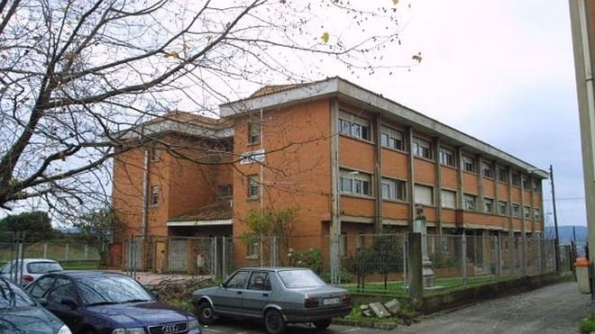

Bienvenido a la web de nuestra escuela. Somos un centro concertado, dedicado a la enseñanza de alumnos de 3 - 16 años.
Además de la Escuela Margarita situada en Barcelona, tenemos tres centros más repartidos por el pais: Escuela Margarita-Madrid, Escuela Margarita-Valladolid y Escuela Margarita-Murcia.La Escuela Margarita de Barcelona fue fundada por Rubén Ortega y Juan Margarita en el año 1999. Desde el principio, nuestra escuela entiende la educación, como un proceso globalizador, donde da respuesta a las necesidades de los alumnos. Por ello, se han ido incorporando nuevos métodos de enseñanza, nuevos idiomas (inglés, alemán y chino).
La escuela está formada por diferentes edificios para cada etapa educativa, con patios y parques infantiles especificos para cada una de ellas.
El equipo directivo de la escuela esta formado por sus fundadores y los directores y jefes de estudio de cada etapa.
El equipo docente de nuestra escuela lo forman profesores y profesoras con una amplia y larga experiencia en educación.
Pretendemos que nuestros alumnos desarrollen al máximo sus capacidades. Mediante el proceso de aprendizaje nos proponemos desarrollar en nuestros alumnos el interés por el conocimiento y el gusto por la ciencia. Creemos necesario un trato personalizado que se adecue al ritmo evolutivo y las capacidades intelectuales de cada alumno.